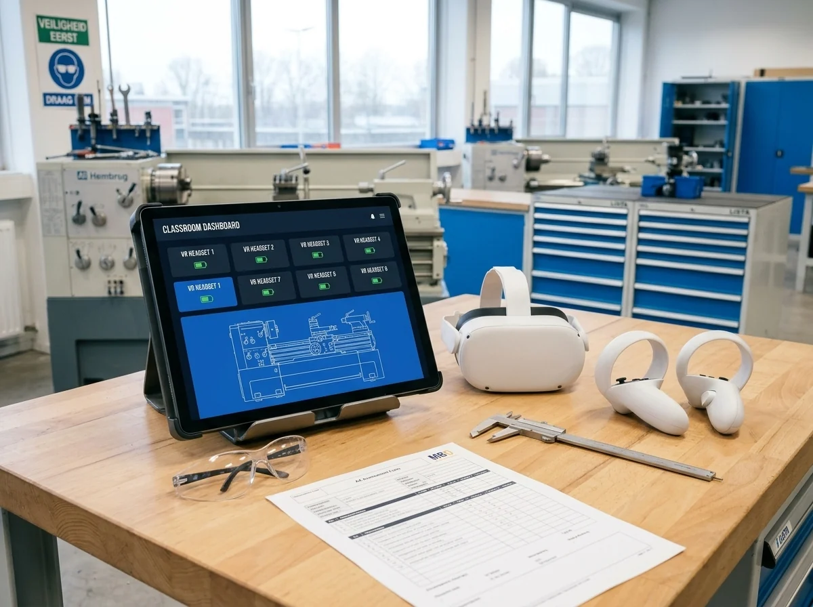

Automatische herkenning
Elke 1,5 s zenden brillen een lichtgewicht beacon uit met slotnummer (QUEST-01..20), batterijstatus en actieve module. Ook onbeperkt eigen brillen koppelen direct.
De vakdocent beheert de hele werkplaats vanaf één water- en stofdichte Samsung Galaxy Tab S10 FE+ in Knox Kiosk-modus. Kijk live mee met één geselecteerde bril, spoel elk leermoment terug en onderteken het A4-rapport met S Pen.

Klik op een student-tegel, wissel van spectator-camerahoek, sleep de 4 Hz Black-Box tijdlijn om de draaibeitel (carriage_x_mm) te zien bewegen of open het A4-vrijgaverapport.
Zowel op eigen Wi-Fi als in de zelfstandige 5G Zioxi VR-Kar vinden tablet en brillen elkaar binnen anderhalve seconde zonder handmatig IP-beheer door school-ICT.
Elke 1,5 s zenden brillen een lichtgewicht beacon uit met slotnummer (QUEST-01..20), batterijstatus en actieve module. Ook onbeperkt eigen brillen koppelen direct.
Alle brillen sturen continu lichte 4 Hz telemetrie, terwijl live meekijkvideo (/api/frame of :5555) uitsluitend op de 1 geselecteerde bril draait voor maximale stabiliteit.
In Turnkey VR-Kar 10 en 20 draait de tablet (192.168.1.10) met vaste slots (.101..120) op een ingebouwde Wi-Fi 7 router met KPN Onbeperkt 5G op één 230V stekker.
| Module | Onderdeel | Status | Geregistreerde meting |
|---|---|---|---|
| M1 | 3D Buddy Check & Eigen PBM | Behaald | Medestudent gekeurd, eigen bril op, handschoenen uit |
| M2 | Machine- & Werkplekcontrole | Behaald | 4/4 prestartpunten herkend |
| M3 | Opspannen & Klauwplaatsleutel | Behaald | Rondloop 0,02 mm · sleutel verwijderd |
| M4 | Vlak- & Trapdraaien op tekening | Behaald | Ø 29,4 mm (±0,2) & Trap Ø 28,0 mm |
| M5 | Stoppen (0 RPM) & 3D-Schuifmaat | Behaald | Nameting bij 0 RPM · spanenhaak gebruikt |
| M6 | Storingen & Noodstop | Behaald | Tijdige stop · geen automatische herstart |
Student: Daan Bakker (QUEST-01 · MBO-2 Verspanen) · Systeem: Quest APK v2.2.0 / Android Dashboard v2.3.0
Afgetekende fysieke vrijgavepunten: PHYS_01 t/m PHYS_05
Onderwijs- en veiligheidsverklaring (AC24): VR-trainingsdoorloop vormt geen bewijs van vakbekwaamheid en vervangt nooit fysieke instructie, controle en vrijgave op de echte machine door een bevoegd vakdocent.